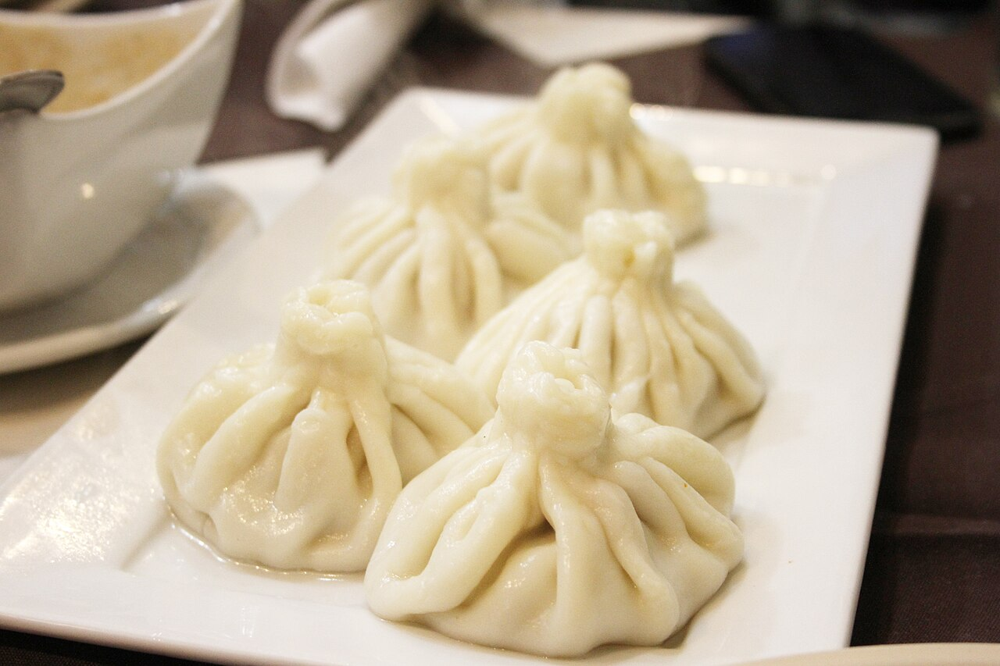
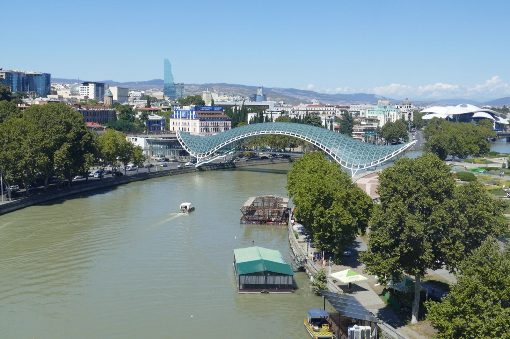

✈ Depart Abu Dhabi
3L714 · Air Arabia · Terminal A· Economy · 4h 30m
Slip out of AUH after breakfast. No time difference to adjust to — UAE and Georgia are both UTC+4.

Wheels down in early afternoon. The river curves once, the old town climbs the hill on one side and the cliffs of Avlabari rise on the other. Drop bags, breathe, walk slowly — there's nothing on this first evening except to fall a little in love with the place.
Slip out of AUH after breakfast. No time difference to adjust to — UAE and Georgia are both UTC+4.
Quick e-gate; eSIM should already be active. Grab Georgian lari at the airport ATM if you didn't bring any.
Don't bother with airport taxis — Bolt rides cost a third of the price. Meeting point is at the marked pickup zone outside arrivals.
The hotel is up a quiet lane in the heart of the old town, with carved wooden balconies overlooking the rooftops. Drop the suitcase, splash cold water, head out — the city is waiting.
Order kalakuri (city-style, with herbs and pepper) and one plate of khinkhalebi mtsvadi-style if hungry. Pinch the top, sip the broth, then bite — never use a fork (locals will side-eye you, gently).

Two of the oldest churches in Tbilisi, both still working parishes — candle-smoke, gilded icons, women in scarves. Anchiskhati (6th century) is the older and quieter of the two. Step inside both, light a candle if you like, listen.
The glass-and-steel bridge looks fairly aggressive in daylight; at sunset it goes quiet and the river turns the colour of brass. Walk it slowly. From the Rike side, look back at Narikala fortress lit on its hill — that's your view for the next two days.

The natural-wine bar that started Tbilisi's whole scene. A small flight of qvevri-aged amber wines, walnut spreads, cheese, sulguni-stuffed kubdari. No need to over-order — let the host pour what's open and good tonight.
The old-town lanes go quiet around 11. Take the long way up the steps past Sololaki's painted facades — the lamps make everything look like a film set. Sleep early; tomorrow has a full day.